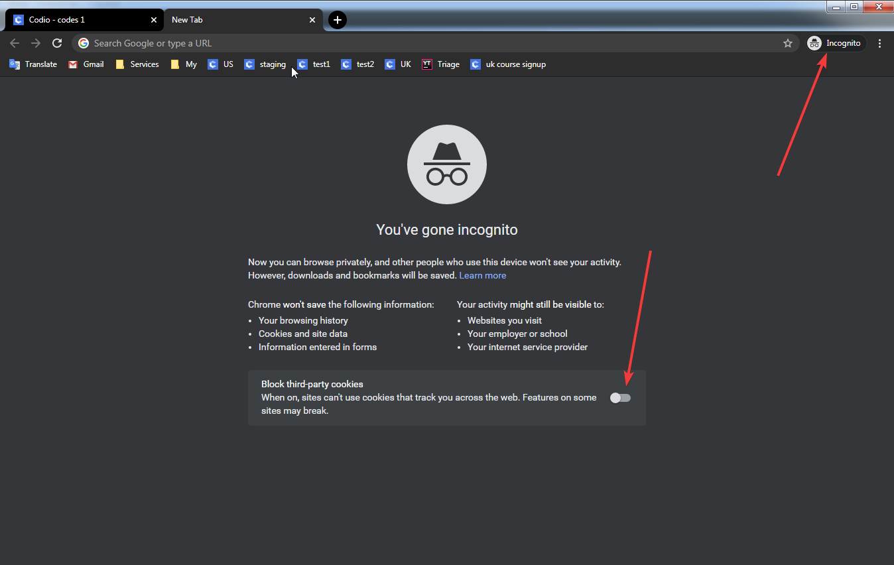
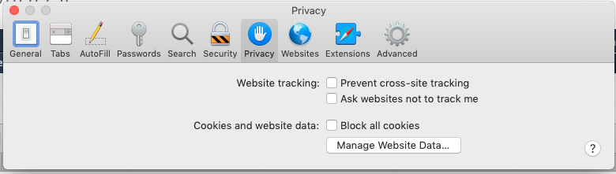
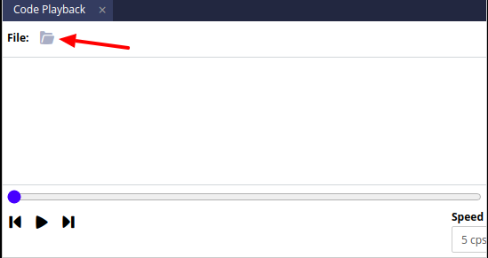
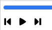
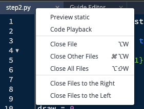
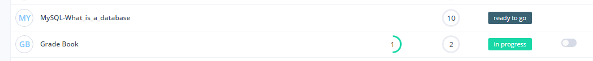
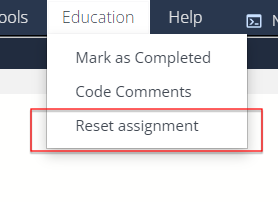
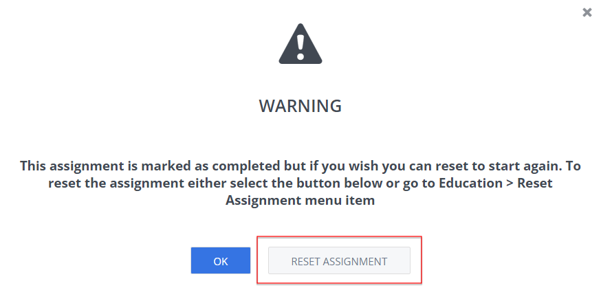

Frequently Asked Questions¶
Not able to see the work previously completed in a Course¶
Where you can’t see work you previously did or being prompted to set up a new payment plan
Your Codio account is associated with an email address, used when you first registered/signed up.
If you are accessing Codio via an LMS (Learning Management System) such as Canvas/Blackboard/Moodle and have logged into the LMS with a different email address as you then open an assignment a new Codio with a different email address will be created and will not see what you may have done previously and you may be prompted to start a new payment plan.
If you are unsure of what different email address you are using in your LMS, go to your Codio Account settings where you can see the email address of this account.
Then check/review your LMS settings to check what other email addresses you have set to use and log out and log back into the LMS with the other email address.
To avoid you accidentally repeating this in future, we suggest you remove all alias email addresses in your LMS account so you can only log into the LMS with the one email account in future. If unsure how contact your local LMS administrators who will be able to assist you
Assignment not loading fully or seeing ‘User not passed’ when accessing from an LMS¶
It can be the case that there is something in your browser which is involved.
We would suggest you clear browser cache/cookies, close all browser tabs and log in again. When clearing your cache/cookies select ‘All Time’ for the period of time to delete.
In the event there is a problem with a browser extension/add on, consider using a private/incognito session to access Codio or try a different browser.
If you are using an incognito session, check that Block third-party cookies is not enabled. If using Chrome, this is now the default setting and can be disabled before you log into Codio or your LMS

If you continue to experience this, please open your browser dev tools (F12) and see if you can see any error in console log that may help you to solve the issue and if you are unable to resolve it, contact us with the output of the console log
Problems accessing Codio when using Safari browser¶
Due to Safari’s “Intelligent” tracking, this will block the necessary authentication cookie.
To ensure access disable “Prevent cross-site tracking” in the browser privacy settings

How do I reset my password?¶
You can log in with your Codio username or the registered email address.
If you have also forgotten your password you can request a new password using either your username or email address.
Resetting your password will send an email to your registered email addresss containing a link for you to click. This will then allow you to enter a new password of your choosing
See Managing your Password for more information.
If you are a student in a Course set up by your teacher, they can also reset your password for you if you can’t recall your username or email address.
Deleted a file by mistake¶
If you delete a file in an error, you can use the Code Playback option to find that file. Please follow the below steps to recover a deleted file:
Open the assignment then go to Tools -> Code Playback*.
Click on the folder icon.

Select the file that you want to recover
Find the file which you have deleted.
Review the file and it will show how it was built
You can find your last saved work by clicking on the Previous change, Play/Pause, and Next change buttons (from left to right) or by dragging the timeline bar along

You can create a new file and copy/paste from the code playback into a new file that you created.
Note
If you don’t have Tools -> Code Playback, right-click on a tab or in the file tree and select Code Playback

Why do I see ‘Terminated by Timeout’ in my challenges¶
In general terms, Terminated by Timeout will be returned when the code you are checking cannot complete and when a stipulated time is reached, it will be terminated.
Review your code and if you need assistance, raise with your class teacher/instructor who will be able to help you as they will be able to see the code you have written
Accessing assignments when using an LMS platform¶
If LTI is enabled for a class, new assignments can only be started via the LMS platform. Any assignments already started can be accessed by logging into your Codio account. Your teacher/instructor can set up a link so if you try to start an assignment you can be given a link to click that will take you to your LMS course.
Assignments that have not been started will show with ‘ready to go’ in the Codio course
Assignments that have been started previously will show with ‘In Progress’ in the Codio course

Note
Teachers in your organization can hide assignments that have not been started from your dashboard so you may only see those you have already started.
Not able to expand the file tree in a Unit¶
Within Guides, the author can control the Layout on each page in the guides which includes showing (or not) the File Tree.
If the File Tree is shown but all folders in the project are hidden then although you may see the file tree, you will not be able to expand to see any content.
If you are experiencing this situation, let your teacher/professor know and they can contact the author to review/update the assignment
Reset my assignment to its default configuration¶
If the assignment you are referring to uses Guides, check out Restore Current Files as that may do what you need but if not and your instructor has allowed you to reset the assignment yourself, you can reset your assignment either from the Education menu area

or when you opened a completed assignment you will see the pop up to reset your assignment (check your browser isn’t blocking pop ups)

If your instructor hasn’t allowed students to reset assignments, discuss with your class instructor as they can reset the assignment for you and you can then start the unit again.
If you also let them know what you did, they may want to review the unit(s) you are working with to help mitigate this problem for you and other students in the future.
How to get help from an AI Chatbot¶
You can get help from a AI Chatbot in your assignment. AI Chatbot can provide multiple options like providing a summary of the assessment, explain an error message and get hints to answer your assessment.
If these options are enabled by your instructors, check out Virtual Coach where these options are explained in details.
If these options are not enabled by your instructors, you can’t use them. In this case, discuss with your instructors who can look to review the assignment and consider enabling this feature.